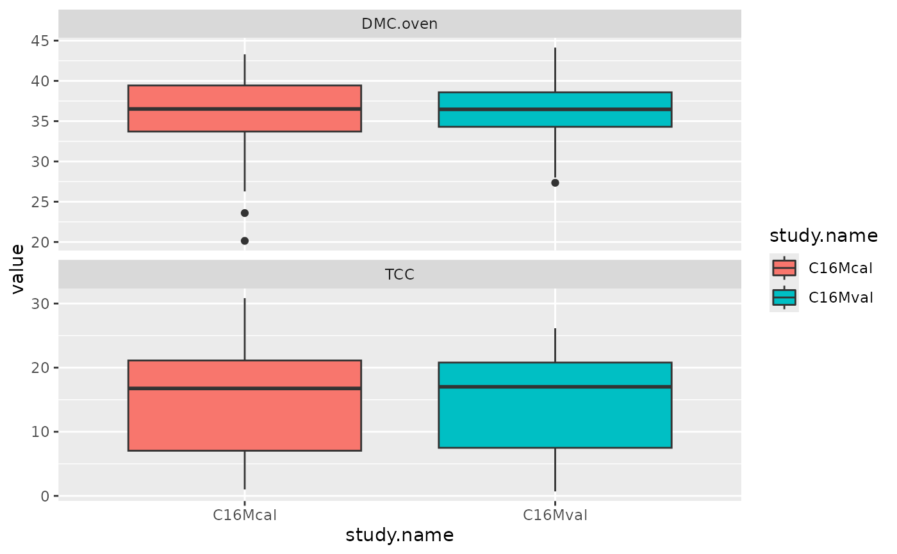

The `ikeogu.2017` data set contains raw vis-NIRS scans, total carotenoid content, and cassava root dry matter content (using the oven method) from the 2017 PLOS One paper by Ikeogu et al. This dataset contains a subset of the original scans and reference values from the supplementary files of the paper. `ikeogu.2017` is a `data.frame` that contains the following columns:
study.name = Name of the study as described in Ikeogu et al. (2017).
sample.id = Unique identifier for each individual root sample
DMC.oven = Cassava root dry matter content, the percentage of dry weight relative to fresh weight of a sample after oven drying.
TCC = Total carotenoid content (\(\mu g/g\), unknown whether on a fresh or dry weight basis) as measured by high performance liquid chromatography
X350:X2500 = spectral reflectance measured with the QualitySpec Trek: S-10016 vis-NIR spectrometer. Each cell represents the mean of 150 scans on a single root at a single wavelength.
References
Ikeogu, U.N., F. Davrieux, D. Dufour, H. Ceballos, C.N. Egesi, et al. 2017. Rapid analyses of dry matter content and carotenoids in fresh cassava roots using a portable visible and near infrared spectrometer (Vis/NIRS). PLOS One 12(12): 1–17. doi: 10.1371/journal.pone.0188918.
Author
Original authors: Ikeogu, U.N., F. Davrieux, D. Dufour, H. Ceballos, C.N. Egesi, and J. Jannink. Reformatted by Jenna Hershberger.
Examples
library(magrittr)
library(ggplot2)
data(ikeogu.2017)
ikeogu.2017[1:10, 1:10]
#> # A tibble: 10 × 10
#> study.name sample.id DMC.oven TCC X350 X351 X352 X353 X354 X355
#> <chr> <chr> <dbl> <dbl> <dbl> <dbl> <dbl> <dbl> <dbl> <dbl>
#> 1 C16Mcal C16Mcal_1 39.6 1.00 0.488 0.495 0.506 0.494 0.500 0.496
#> 2 C16Mcal C16Mcal_2 35.5 17.0 0.573 0.568 0.599 0.593 0.581 0.597
#> 3 C16Mcal C16Mcal_3 42.0 21.6 0.599 0.627 0.624 0.606 0.607 0.624
#> 4 C16Mcal C16Mcal_4 39.0 2.43 0.517 0.516 0.514 0.536 0.542 0.536
#> 5 C16Mcal C16Mcal_5 33.4 24.0 0.519 0.548 0.554 0.549 0.549 0.567
#> 6 C16Mcal C16Mcal_6 32.1 19.0 0.576 0.566 0.589 0.591 0.613 0.628
#> 7 C16Mcal C16Mcal_7 35.8 6.61 0.530 0.536 0.525 0.539 0.537 0.529
#> 8 C16Mcal C16Mcal_8 26.3 14.1 0.596 0.596 0.602 0.608 0.604 0.610
#> 9 C16Mcal C16Mcal_9 38.1 28.9 0.675 0.662 0.688 0.694 0.697 0.695
#> 10 C16Mcal C16Mcal_10 31.8 18.4 0.510 0.527 0.535 0.538 0.542 0.551
ikeogu.2017 %>%
dplyr::select(-starts_with("X")) %>%
dplyr::group_by(study.name) %>%
tidyr::gather(trait, value, c(DMC.oven:TCC), na.rm = TRUE) %>%
ggplot2::ggplot(aes(x = study.name, y = value, fill = study.name)) +
facet_wrap(~trait, scales = "free_y", nrow = 2) +
geom_boxplot()
